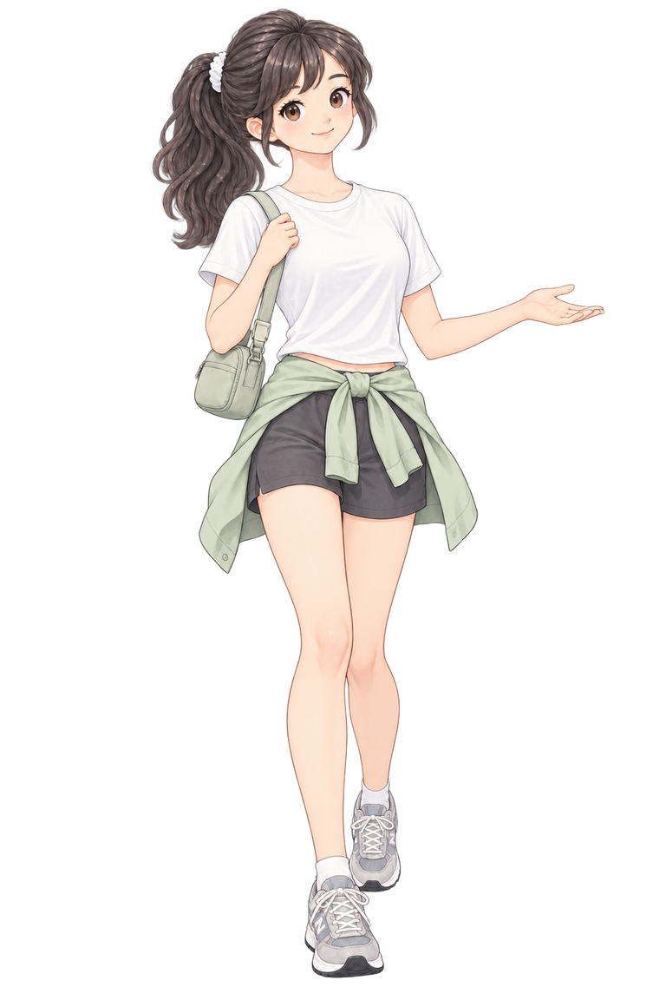
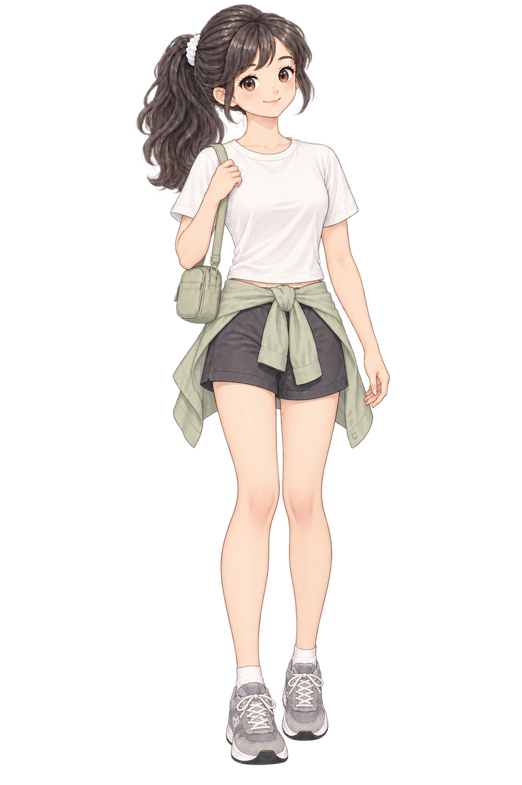

SANPO
天気を確認中現在地から取得

今日はどっち方面いく？
目標まであと
5.0km
今日の距離0.0km
消費0kcal
歩数0歩
GPSを準備中
今日のコンディション
ぽっちゃり
TODAY'S ROUTE
今日のコース

このコース、一緒に歩こ。
残り- km
進捗0%
目安- 分
今日の推定歩数
0 / 7,000 歩
距離目標 5.0 km
GPSを準備中
0%
消費カロリー
0kcal
歩行時間
0分
距離
0.0km
LIVE SANPO
今日の歩きをウォッチ中（歩数は推定）
0%
歩数0歩
距離0.0km
消費0kcal
目標まで5.0km
今日のがんばり
消費カロリーを身近な食べ物に置き換えると


地図をタップしてスタート地点を設定
距離-km
時間-分
歩数-
消費-kcal
コースを作る
今日の気分に合わせてルートの特性を選べます
歩きやすさと距離のバランスを見て、気軽な周回コースを選びます。
歩く時間30分
10〜120分を5分刻みで設定できます ・ 目安 2.3 km
コースを作成中…
00:00:00
歩数
0
距離
0.00 km
カロリー
0 kcal
いってみよっか。

総歩数0
総距離0.0 km
総カロリー0 kcal
歩行時間0 分
YOUR MOTIVATION
最近の散歩
プロフィール
km
キャラクター
体型変化プレビュー
今日の目標距離に合わせて、ぽっちゃり → ちょいぽちゃ → 標準 → スリムへ変化します。目標距離を変えると変化のペースも自動で変わります。
0%
ぽっちゃりちょいぽちゃ標準スリム
アプリ
犬を表示する
日次リセット毎日 0:00